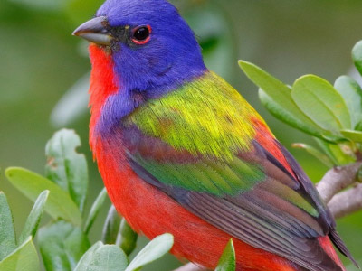

Fun Facts about my country:
sponsored by:

The Happiest Country in the world
According to the research, the level of optimism of Colombians surpasses Latin Americans by 6 points. The country once again ranked as the second happiest in the world.
Learn More

Colombia the best destinations to visit
A list of Lonely Planet is a country with a spectacular change that has lasted more than a decade amid what appears to be an imminent end to decades of civil war and violence...
Learn Morethe greatest diversity of birds.
According to the organization Conservation Strategy, the country has about 1,900 registered species, which is equivalent to 20% of the species in the world.
Learn More